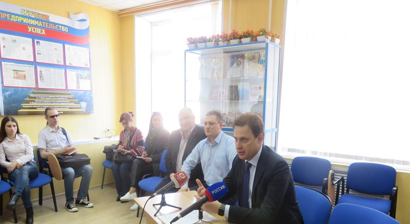
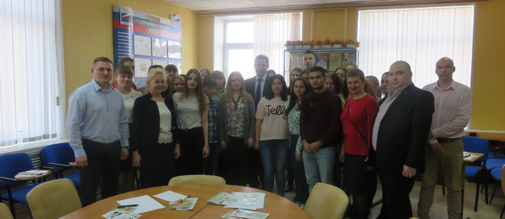
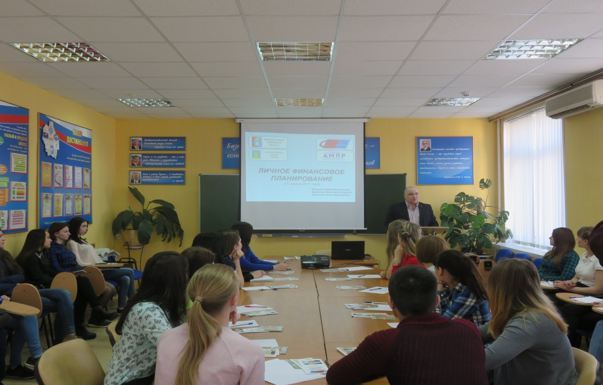
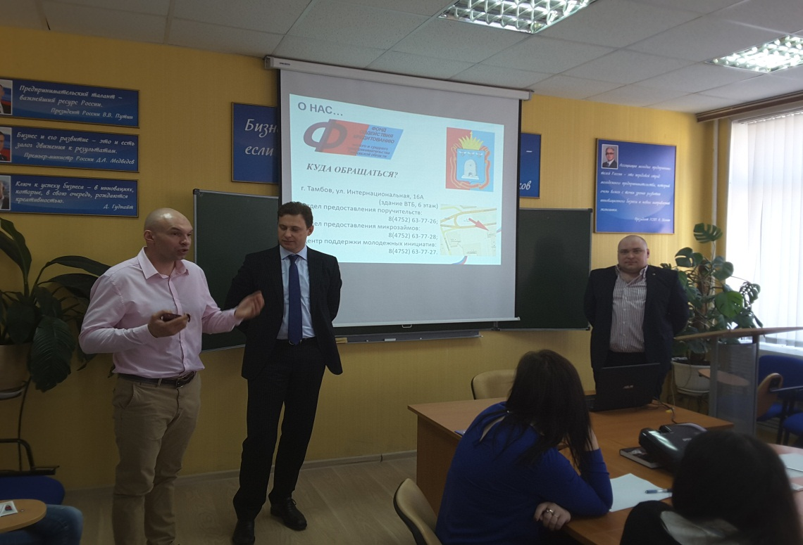

Дни финансовой грамотности в Тамбовском бизнес-колледже
11 апреля 2017 года представители АО МК «Фонд содействия кредитованию малого и среднего предпринимательства Тамбовской области» провели занятие в Тамбовском бизнес-колледже в рамках мероприятия «Дни финансовой грамотности» в учебных заведениях.
В мероприятии принял участие первый заместитель главы администрации Тамбовской области Александр Николаевич Ганов.
Как считает первый вице-губернатор, это мероприятие является ответом на вызов времени. Современное поколение российской молодежи, живущее в условиях рыночной экономики, остро нуждается в освоении элементарных навыков планирования, сбережения и приумножения средств, иными словами, в управлении своими личными финансами.
«Молодёжь – наше будущее, и мы обязаны привить ей основы финансовой культуры, познакомить с основными правилами личного финансового планирования, чтобы завтра молодым было легче вступить во взрослую жизнь, а для кого-то - определиться с выбором будущей профессии», - сказал А.Н. Ганов.



